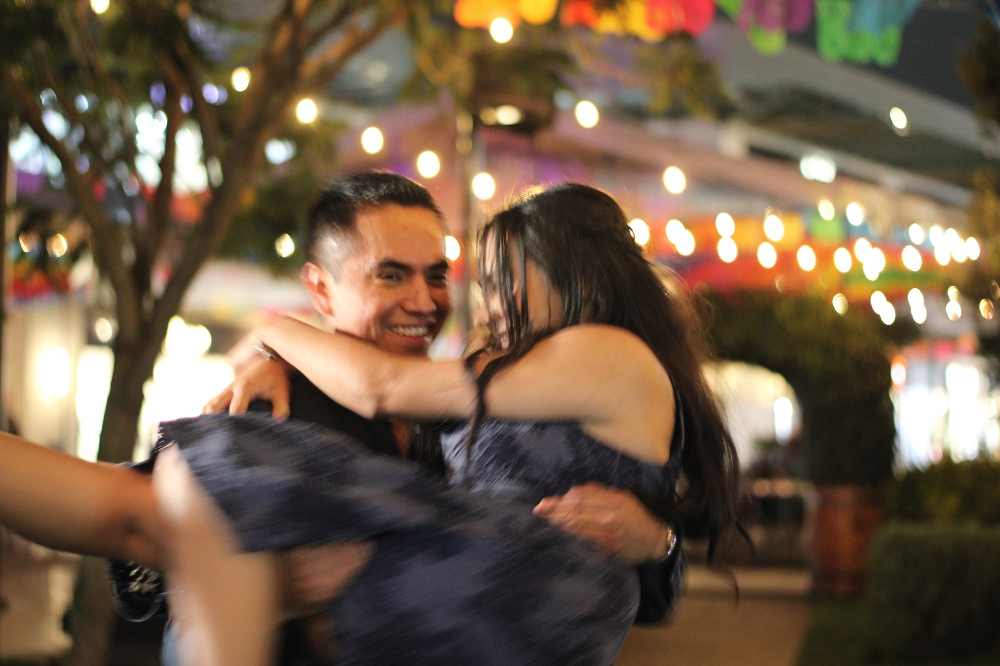
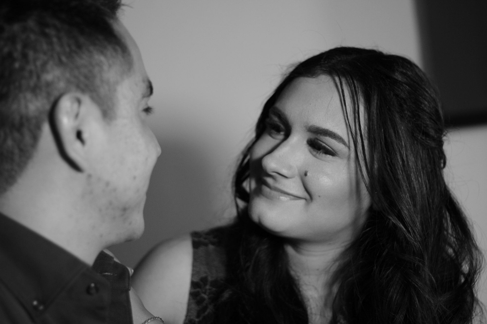

Bienvenidos a celebrar
Recepción · 1:00 p. m.
Salón de eventos
Residencial Alboreto
Calle Ali Chumacero 1000
San Lorenzo Coacalco
52140 · Metepec, Estado de México

Activa la canción para seguir la letra.
Loving can hurt
Loving can hurt sometimes
But it's the only thing that I know
When it gets hard
You know it can get hard sometimes
It is the only thing that makes us feel alive
We keep this love in a photograph
We made these memories for ourselves
Where our eyes are never closing
Hearts are never broken
Times forever frozen still
So you can keep me
Inside the pocket
Of your ripped jeans
Holding me closer
'Til our eyes meet
You won't ever be alone
Wait for me to come home
Loving can heal
Loving can mend your soul
And it's the only thing that I know (know)
I swear it will get easier
Remember that with every piece of ya
And it's the only thing we take with us when we die
We keep this love in a photograph
We made these memories for ourselves
Where our eyes are never closing
Hearts were never broken
Times forever frozen still
So you can keep me
Inside the pocket
Of your ripped jeans
Holding me closer
'Til our eyes meet
You won't ever be alone
And if you hurt me
That's OK, baby, only words bleed
Inside these pages you just hold me
And I won't ever let you go
Wait for me to come home
Wait for me to come home
Wait for me to come home
Wait for me to come home
Oh you can fit me
Inside the necklace you got when you were sixteen
Next to your heartbeat
Where I should be
Keep it deep within your soul
And if you hurt me
Well, that's OK, baby, only words bleed
Inside these pages you just hold me
And I won't ever let you go
When I'm away
I will remember how you kissed me
Under the lamppost
Back on 6th street
Hearing you whisper through the phone
"Wait for me to come home"
EL SIGUIENTE CAPÍTULO, CONTIGO
Queremos compartir contigo la alegría de nuestra boda.
Será un día para celebrar el amor, nuestra historia
y todo lo que viene.

Activa la canción para seguir la letra.
01 / NUESTRA HISTORIA
Nos conocimos hace quince años. La vida nos llevó por caminos distintos, hasta que volvimos a encontrarnos. Hoy elegimos caminar juntos hacia lo que viene.
Hay historias que encuentran el momento de volver.
Karina & Alexis02 / LA CELEBRACIÓN
Recepción · 1:00 p. m.
Salón de eventos
Residencial Alboreto
Calle Ali Chumacero 1000
San Lorenzo Coacalco
52140 · Metepec, Estado de México
Ceremonia · 2:00 p. m.
Salón de eventos
Residencial Alboreto
Recepción y ceremonia en el mismo lugar.
CÓDIGO DE VESTIMENTA
Formal
Hombres: por favor, evitar el azul marino.
03 / INSTANTES NUESTROS
Desliza para descubrir nuestros momentos.
Toca una foto para verla completa.
Toca un recuerdo para verlo completo.
EXPLORA NUESTROS 12 INSTANTES
Activa la canción para seguir la letra.
RECUERDOS QUE NOS UNEN
¿Tienes una foto con alguno de nosotros?
Compártela junto con unas palabras para este nuevo capítulo.
El primer recuerdo podría ser el tuyo.
Cada recuerdo se revisa con cariño antes de aparecer aquí.
04 / NOS ENCANTARÍA VERTE
Nos hará mucha ilusión compartir este día contigo.
Cuéntanos si nos acompañas.